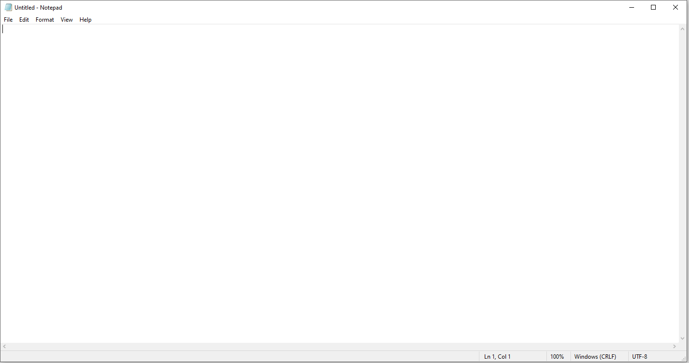
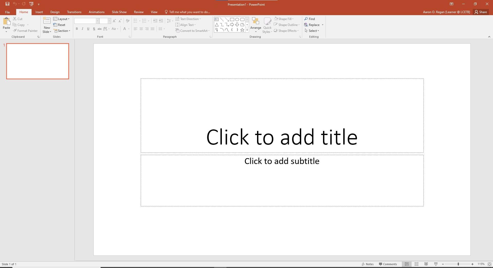
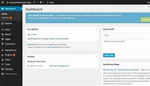
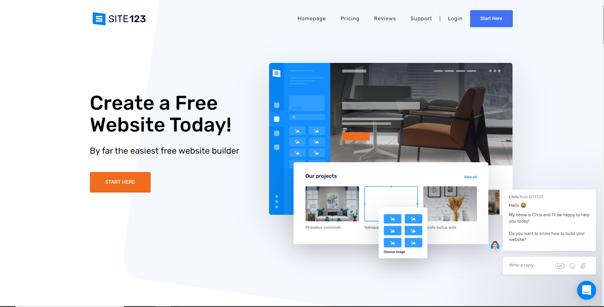
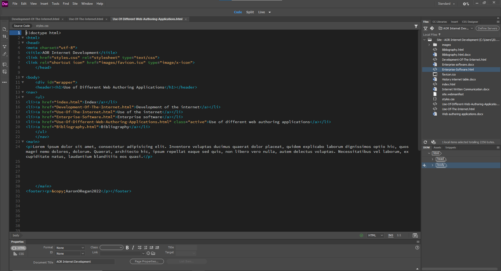

Word Processors:
A type of program used to type in, write documents or store information and there is a lot of types of word processing software such as Freeware, which means it is free to download.
Examples:
Atlantis Nova, Jarte, AbiWord, etc.
Desktop publishing programs:
These are used by graphic designers and web developers to create web pages, posters, business cards and even more for professional or desktop printing as well for online or on screen electronic publishing. Different types of desktop publishing software are Adobe InDesign, Microsoft publisher, Scribus, etc.
Examples:
PowerPoint, Microsoft Word, adobe Photoshop, Adobe Illustrator, etc.
Website management systems:
Allows people with little knowledge of HTML to create and manage a website and gives them administration tools to aid with their design and are great when creating a basic website but gets more complicated the more you customise the site.
Example:
WordPress.
Webpage builders:
Used to host a person's site and help with a domain name for the person's site and very low cost but has a limited supply of design templates.
Example:
Site123
HTML editors:
There are two different types of HTML editors. Pure code based editors such as Notepad++ which will give you more functionality than basic text editors with HTML/CSS and WYSIWYG editors such as Dreamweaver which renders HTML page as if it's being viewed through a web browser.
Examples:
Notepad++ and Dreamweaver.
